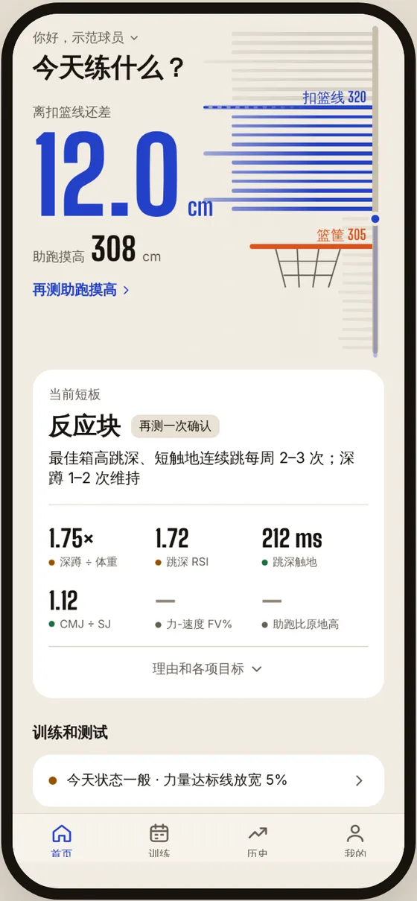
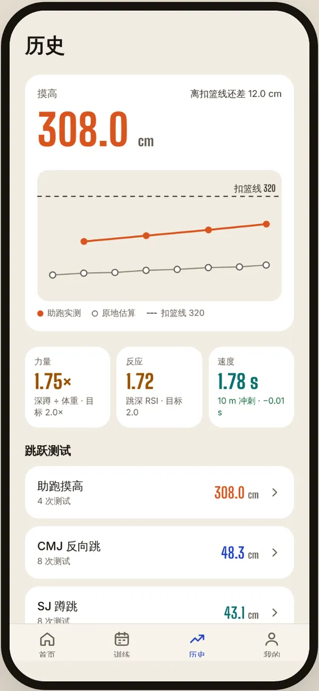
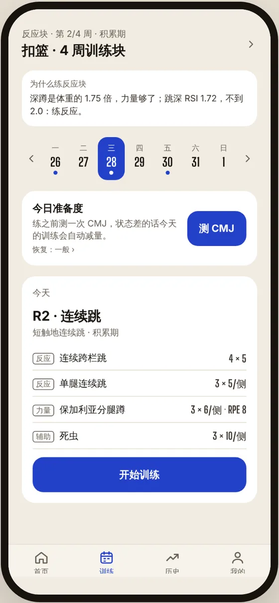

练弹跳，
只为扣篮。
测出离扣篮线还差几厘米，看清缺的是力量还是反应，再按短板排出今天的训练。每次测试后，计划跟着变。
开源 · 数据先存手机 · 不装统计和追踪
作者现在就在这里：318 cm，目标 12 月 1 日前扣进第一个篮。
整个 App 只回答三个问题。
别的功能都在给这三个问题提供数据。打开就能看到结论，不用自己翻表格算。

离扣篮线差多少
摸高器直接画出你和 320 的距离，取最好 3 跳均值，带误差。

差在哪块
力量、反应、速度三格对照达标线，超过最小有意义变化才算进步。

今天练什么
按短板排 4 周训练块，练前测一次 CMJ，状态差就自动减量。
截图为示范球员的数据。
八个板块，一个目标。
所有测试都汇总进首页的扣篮诊断。能自动的不让你手动选，测不准的指标不进诊断。
扣篮诊断
离扣篮线几厘米、当前短板、预计哪天过线，还能记下每次真实试扣。
跳跃测试
CMJ、SJ、跳深、10/5 连跳、助跑摸高。导入慢动作，自动认出起跳和落地帧。
速度
10 / 30 / 50 / 100 m 冲刺，慢动作逐帧，或光电门、秒表手填，分开比较。
杠铃速度
录像自动跟踪杠铃片算行程和速度，估算深蹲 1RM，不用买测速设备。
恢复
HRV、静息心率、睡眠。用快捷指令从苹果健康导入，或者手填。
训练
4 周训练块、今日训练、练后 RPE 和膝盖评分，负荷高了下次自动少跳。
历史
摸高曲线为主，其他指标看趋势和逐次记录。记错了能改能删。
备份
邮箱登录后整库同步到你自己的云端账号，也能导出、导入备份文件。
首页「辅助」里还有灵活度和体能耐力（Yo-Yo、Cooper、RSA），对弹跳本身贡献小，默认收起。
缺力量还是缺反应，一张表说清。
测试、诊断、计划、训练、记录，做成一个闭环。第 4 周减量并复测，诊断变了就建议换块。
- 1
测试
测试日向导按 CMJ → 跳深 → 助跑摸高走一遍，相册一次多选视频。
- 2
诊断
按诊断规则判断短板，最近两次结论一致才算数。
- 3
计划
排 4 周训练块，按目标日倒推，赛前 7–10 天减量。
- 4
训练
练前 3 跳 CMJ 看准备度，恢复差那天自动减量。
- 5
记录
逐组、逐次记下，练完打 RPE 和膝盖疼痛分。
- ↺回到第 1 步，复测后计划跟着变。
诊断规则
| 先看 | 没过线 | 就练 |
|---|---|---|
| 深蹲 1RM ÷ 体重 | < 1.5 | 力量块 |
| 跳深 RSI、触地时间 | < 2.0 或 > 250 ms | 反应块 |
| 两项都过线 | — | 转化块 |
跳高按腾空时间 h = g·t²/8 · 力-速度曲线按 Samozino 简易法 · 每个公式在测试里写了算例
三种打开方式，都不用 Xcode。
也不用开发者账号。三种方式各存各的数据，在「我的 → 数据备份与同步」登录同一个邮箱就能互通。
马上就能用
iPhone 用 Safari 打开，点「分享 → 添加到主屏幕」，之后全屏使用。
sam18069272581.github.io/jump-attack微信、QQ 内置浏览器打不开，请用 Safari。
打开网页版 →天天用，不开电脑
App Store 装 Expo Go，登录有权限的 Expo 账号，打开这个地址。
exp://u.expo.dev/589a8a7c-8269-46a9-a6f1-a9fa25be2636?channel-name=mainExpo Go SDK 58 · 合并进 main 后自动更新
完整说明 →改代码、看最新分支
手机和电脑连同一个 Wi-Fi，用相机扫终端里的二维码。
git clone https://github.com/Sam18069272581/jump-attack
cd jump-attack/mobile
npm install
npm start需要 Node.js LTS · 校园网隔离设备时加 --tunnel
开发说明 →从自己，到队里。
先给作者自己用，测准了再推广到队里。取舍只有三条：测得准比功能多重要，记录要省事，数据不能丢。
健康和训练数据先存在手机上。只有你登录自己的云端账号后，才会整库同步过去。